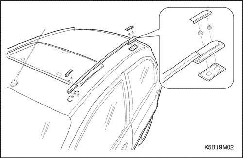
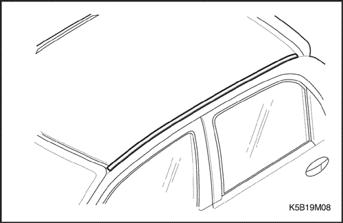
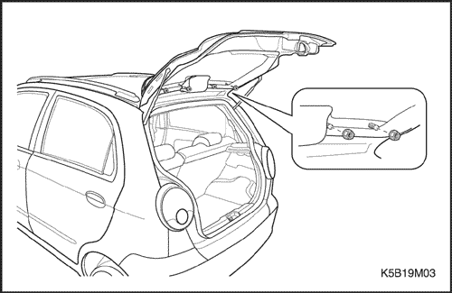
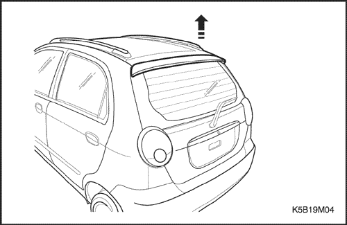
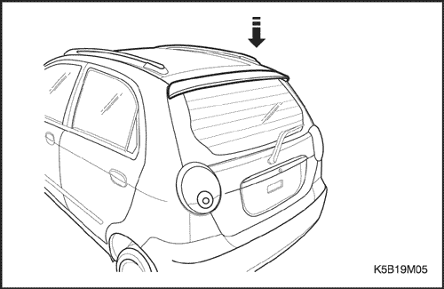
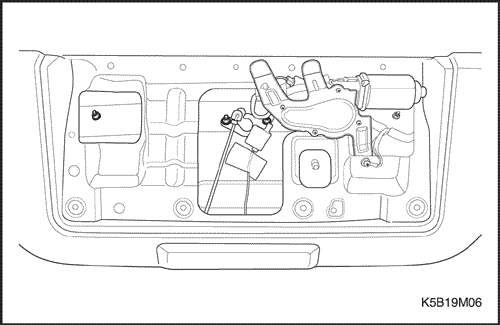

SECCIÓN 9M
GUARNECIDO EXTERIOR
ESPECIFICACIONES
Especificaciones de apriete de la sujeción
Aplicación | N•m | Lb-pie | Lb-pulg. |
Tuercas de la percha del techo | 7 | - | 62 |
Tuercas del deflector aerodinámico trasero | 4 | - | 35.5 |
Tuercas del tirador del portón trasero | 5 | - | 44 |
MANTENIMIENTO Y REPARACIÓN
Servicio en el vehículo



Percha del techo
Procedimiento de desmontaje
- Desmonte la tapa y las tuercas de la percha del techo delantera.
- Desmonte la percha del techo del techo.
Procedimiento de montaje
- Monte la percha del techo con sus tuercas.
Apretar
Apriete las tuercas de la percha del techo hasta 7 N•m (62 lb-pulg.).

Moldura del techo
Procedimiento de desmontaje
- Desmonte de los clips de plástico la moldura del techo.
Procedimiento de montaje
- Presione la moldura del techo sobre los clips de plástico.

Deflector aerodinámico trasero
Procedimiento de desmontaje
- Abra el portón trasero.
- Desmonte el deflector aerodinámico del portón trasero.

- Desmonte los retenes del deflector aerodinámico.

Procedimiento de montaje
- Monte el deflector aerodinámico con las tuercas en el portón trasero.
Apretar
Apriete las tuercas del deflector aerodinámico trasero hasta 4 N•m (35,5 lb-pulg.).
- Monte los retenes del deflector.

Tirador del portón trasero
Procedimiento de desmontaje
- Desconecte el cable negativo de la batería.
- Abra el portón trasero.
- Desmonte el guarnecido del portón trasero.
- Quite las tuercas del asidero del portón trasero.
- Desmonte las luces de la matrícula. Consulte la Sección 9B, Sistemas de alumbrado.
Procedimiento de montaje
- Monte el tirador del portón trasero con sus tuercas.
Apretar
Apriete las tuercas del tirador del portón trasero hasta 5 N•m (44 lb-pulg.).
- Monte las luces de la matrícula. Consulte la Sección 9B, Sistemas de alumbrado.
- Monte el guarnecido del portón trasero.
- Conecte el cable negativo de la batería.
DESCRIPCIÓN GENERAL Y FUNCIONAMIENTO DEL SISTEMA
Emblemas y letras
Los emblemas y las letras del vehículo se fijan a la carrocería con un adhesivo. En el capó aparece el emblema del fabricante. Las letras que aparecen en diferentes partes de la carrocería, indican el modelo, la cilindrada y el nombre del fabricante.
Guardabarros
Los guardabarros delanteros y traseros son equipos opcionales en todos los modelos. Los guardabarros evitarán una acumulación excesiva de barro en la carrocería.